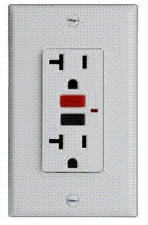
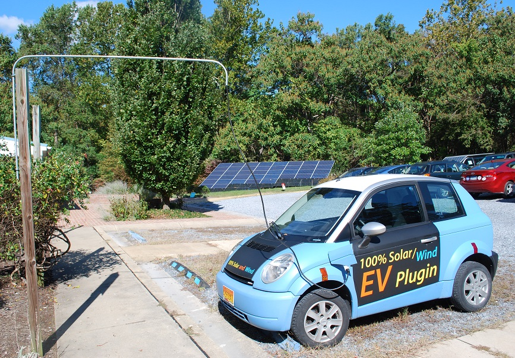
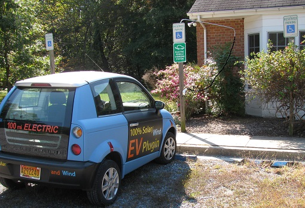
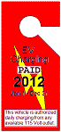

.
.

Churches, Schools, Motels, Everywhere: This page shows the grass-roots movement to get EV Charging Outlet signes in Church, School, Motel, Office, Retail and Recreation parking lots wherever existing 120v outlets exist. These outlets can provide top-off EV charging to customers and visitors to encourage them to drive their EVs to these facilities. All EV's come with a standard 120v cord for topping off at any convenient outdoor outlet or extension cord. The cost of electricity is about 20 cents an hour and this is easily met with a contribution or donation. And there are no installation costs, since the outlet already exists. And there is no risk. It would take five hours just to steal $1 worth of electricity and is simply not worth it to the car owner to waste away 5 hours just to steal $1.
The perfect marriage of solar and Charging: See this news item about an Arkansas Church that did both Solar and EV charging.
New Charging Signs are in: We just got a new batch of EV charging signs for marking available outdoor outlets. These new signs have a small white blank place at the bottom that can be used to give any contact or payment info... Even if you dont have an outlet, put up the sign anyway, and have an extension cord availble for anyone in your organization needing a charge. The signs are quality aluminum parking signs available for $20 each. Or, send us a photo of where you will hang the sign and I will donate one for free!
Background: Most of what we think we know about EV's is quite likely wrong... See EV Misinformation Page.
See also EV Charging Everywhere page for more background.
Charging While Parked: Most EV owners know (or are learning), and even the Maryland Governor's EV Infrastructure Council has determined that 97% of Electric Vehicle (EV) charging at-work (or play) can be satisfied by simply plugging EV's into standard 120V outlets while parked. With more and more people considering driving an EV for local travel and commuting, we need to be ready for this new clean energy transportation. In stewardship of the Earth and in testimony to peace to prevent future wars over diminishing oil supplies, many businesses, churches, and non-profits have added Charging Outlet signs over their existing outdoor outlets. For example, the Annapolis Friends Meeting outlets shown below.
In addition, the Quaker center at Pendle Hill in Media, PA also installed signs over their outlets and went to the next step to also install a charger there, below right.
.
Paying for it: Everyone is familiar with the weekly pain-at-the-pump where the typical gas tank fill up costs on the order of $50. What most people dont realize is that a typical fill-up for an EV (plugging in for 5 hours) only costs a single $1 as shown in the cartoon at the right. But that is the point... EV's like to plug in whenever they park. And making existing outlets available and a means to pay for it is the point of this web page.
Charging is routine: And not only is it a trivial cost, it is also usually repetative and daily. EV's are best for local travel and especially commuting. People buy EV's to drastically reduce their local driving costs by 70%. And since they need to always plugin while parked, they will usually be the same ones using the same outlets every day. They are happy to pay for the privilege. Just tell them where to pay! At church it is easy to just drop an extra few quarters in the plate. At work it is simple to make arrangements to pay for a monthly charging pass for the cost of electricity. In Maryland, the cost to charge is about $1 per month per daily incoming commute mile. So a 20 mile daily commute would pay about $20 for her charging pass.
The images that follow show a number of locations at churches, civic organizations, scout camps and other locations where we have contacted the owners of existing outdoor outlets and who have agreed to put up a charging sign and are happy to see their outlets used for the progress towards an emission free society.
 . . . 
Getting Across a Sidewalk: Annapolis Friends Meeting added a level-2 EVSE closer to the building than the two L1's at top of page (so we didnt have to run a new trench and to provide faster charging), we mounted a bent piece of 1/2" conduit on a handicapped post to swing out and hold the cord over the sidewalk as shown above. On the right, when not in use, it swings back over the bushes. The height should probably be at 7 feet since that seems to be the height of all the commercial awnings that overhang from various business in downtown, so that is probably the code, though I couldn't find it. Notice also how our meeting house is fully solar powered (and hence charging too) from our 9 kW array in the background.
See also the support pipe detail which is just two screw-eyes and a "coupler" tightened just above the top eye. You have to cut the coupler in half since normally, they have an internal stop that won't slide over the pipe without removing it first. You can see this was just a demo, since the EVSE cord should come out this end of the pipe and go to the EVSE over by the 240V outlet on the front of the building. We'd also probably paint the pipe black to reduce its visibility. Since this is a handicapped parking space, the EVSE sign is not normally hung unless someone needs to charge and gets to the spot first. Then they can hang the EV charging sign on a nail.
Severna Park Baptist Church and Montessouri International Childrens's House (Arnold)
...
Charging Ubiquity and Visibility: One of the best locations to put charging signs is over available outlets in Church parking lots. Usually every church has at least one existing outlet, and most churches are concerned over the environment and are happy to do a small part to help reduce emissions resulting form church attendance. By offering convenient charging while parked, the church might help an EV owner eliminate their concern over having enough range to get back home or to run Sunday afternoon errands.
Visibility: It should be noted that placing signs over existing outlets is not so much for the 1% who might use them but for the education of the other 99% of the church members that the electric grid is everywhere and all it takes is a simple 120v outlet to charge an EV while parked.
Annapolis St. John Neuman's: on Bestgate Road is one of the larger churches in Annapolis and is served by the same environmnetal committee as the older St. Mary's church downtown. In early winter 2012, an existing outlet in the parking lot was made available for EV charging as shonw here. This outlet is well situated away from the highly competitive parking spaces closer to the front door and is on the far side of the parking lot making it less likely to be blocked by gasoline burning cars.
Annapolis St. Mary's Catholic Church: has a very active environmental committee that has invested in significant storm-water runoff collection in their parking using attractive rain gardens in the medians and along the down hill borders. In the Fall of 2012 they installed a Charging Sign over an available outlet that is also ideally located in a highly visible location but some distance away from the building entrance as shown below. This kind of location is ideal for EV charging because it improves the chances that the spot will not be occupied by some gas car blocking access to the EV in need.
. . . ...
Country Club Estates, Glen Burnie Swimming Pool: This sign is particularly valuable for the education of the public because it has posted the actual cost to charge. The cost of 25 cents an hour can easily be collected by the Lifeguard who has to collect a swimming fee or log everyone through the gate anyway. She just twists a timer from 1 to 4 hours depending on the fee paid. The actual cost of electricity is only 20 cents an hour for an EV, so the extra 5 cent handling fee (tip) was part of the incentive to make up for the life guard time and effort.
...
Girl Scout Camps at Ilchester and Whippoorwill: Bill Ensor of the Girl Scouts of Central Maryland has tentatively given permission to place EV Signs at all the camps in Maryland where outlets exist. So far, these are the sites we have found.
...
Friends Wilderness Center: This retreat center places the sign over the convenient outlet to support vehicles traveling to the camp from up to 80 miles away as shown in the map. EV's coming to the camp can be assured that they can plug in during the weekend and have a full charge for the trip home. To replenish an 80 mile charge, the car will need 20 hours, but that is fine during a weekend visit when the car is parked the whole time. Total cost about $3.
.
Baltimore Washington Medical Center: Our biggest success with respect to the largest number of outlets was with the BWMC. Not only did they install a few signs, but even added a few additional outlet circuits to support a total of 4 charging outlets. These outlets are higher up on the 4th through 6th floors as shown here, again to improve the chances that they will not be blocked by inconsiderate gasoline car drivers.
Descriptive Outlet Handout: To help describe the relationship between the outlet owner and the EV owner, we have prepared a one page handout that describes the understandings of outlet use. In this case, BWMC has included some of that language on the sign itself as shown here.
...
HOTELS: Hotels are a great place for using 120v outlets for charging because the guests stay overnight. And overnight any EV can gain from 40 to 50 miles of range from an existing outlet. Here is a photo of one of the first Hotels, OCallaghan's in Annapolis to hang a sign over their outlet right at ther front door.
Delaware Potential: Our first outlet success was at the Blue Waterhouse B&B just a block from the beach in Lewes Delaware as shown here. A second success was with Hampton Inn on the Rehoboth strip, though their corporate made them remove the sign, even though they still offer charging to guests. Another great opportunity would be if the Cape May Ferry placed an L2 charger on their boats? Then the 40 mile range of a Volt, for example, would be extended by almost 24 miles during the 80 minute trip, extending the range from Atlantic City, NJ down through most of Delaware on a single charge.
.
 Example Problem Signage: Here is an example of how not to do things. For years we pestered the State to recognize the 36 standard L1 outlets in the Calvert Street State parking garage with signage (after of course, isolating the circuits and only putting up one sign on one outlet per circuit). We also recommended against making them exclusive by allowing non-EV parking after 9 AM as shown in the image here. But 3 years later, the result was 8 new individual outlets (good!) but also 8 new thou-shalt-not-share EV exclusive signs (bad).
Example Problem Signage: Here is an example of how not to do things. For years we pestered the State to recognize the 36 standard L1 outlets in the Calvert Street State parking garage with signage (after of course, isolating the circuits and only putting up one sign on one outlet per circuit). We also recommended against making them exclusive by allowing non-EV parking after 9 AM as shown in the image here. But 3 years later, the result was 8 new individual outlets (good!) but also 8 new thou-shalt-not-share EV exclusive signs (bad).
This was a disaster when the signs went up and all the legislators and delegates to the legislature now had to drive past those 8 empty parking spots to a FULL garage and face the frustration of not being able to park and seeing the EV spots unused. In respones, all of the signs were removed but one. This was a good idea, and then only put the signs back as demand needs more L1 spaces.
Avoid EV-animosity! . But the better method is always our original suggestion for workspace parking (from we EV drivers with 20 years experience with this stuff) and that is to SHARE the spaces as in our original signage suggestion (open parking after 9 AM). This way, the PUBLIC sees that there is plenty of EV charging available if they eventually buy an EV, and they also do not see it as a threat to their gas cars either. This is very important not to create EV Animosity when we roll out convenient charging.
Why 120v Charging is so important for the adoption of Electric Vehicles: The remainder of this page fills in the background on why so much of this EV charging is misunderstood. This info is mostly gleaned from the EV Misinformation Page.
Simplicity: These are simple outdoor 120v outlets, but they are still capable of adding about 16 to 20 miles range to an EV while parked for about 4 hours. There is too much media focus on fast-charging an EV in the shortest possible time, using expensive fast chargers (Level-2). This is an unfortunate and misleading legacy of gas cars which must be inconveniently refueled while we are using them. On the other hand, EV's are conveniently refueled while parked. Since the typical car sits parked for more than 21 hours a day usually at home, at-work, at-church or at-play, just plugging it in while parked is a great way to preserve the battery at a fully charged state and ready for maximum range for every trip. The cost is only about 20 cents an hour and is easily met with a few quarters donated to the cause.
 Convenience:
Having the plug-in outlets encourages people to not fear an EV for their next car purchase.
Having outlets both at-home, at-work, at-church and at-play effectively doubles the range of plug-ins
by allowing the EV owner to charge during the day at work as well as at home and to pick up
a few miles at play. See also the web page on
EV Charging Everywhere for more info
on using existing 120v outlets for convenient charging.
Convenience:
Having the plug-in outlets encourages people to not fear an EV for their next car purchase.
Having outlets both at-home, at-work, at-church and at-play effectively doubles the range of plug-ins
by allowing the EV owner to charge during the day at work as well as at home and to pick up
a few miles at play. See also the web page on
EV Charging Everywhere for more info
on using existing 120v outlets for convenient charging.
 Cost: As shown here, simple 120 volt outdoor outlets placed conveniently at home, at work
or anywhewre else can accomplish nearly all of EV charging needs. Fully 78 percent of
most commuters can charge in under 5 hours at work or home and the typical 10 mile or less
recreational visit can be replenished in 2 hours or so for two quarters donation.
Not only for the designated visitors, these outlets can serve as good Sumaritans to assist those EV drivers
who may need an emergency charge just to get home. For this reason,several of these charging outlets are listed on a
national EV charger locator. Further, these
simple 120v outlets cannot be abused, since it would take nearly 10 hours just to steal about $2
worth of electricity.
Cost: As shown here, simple 120 volt outdoor outlets placed conveniently at home, at work
or anywhewre else can accomplish nearly all of EV charging needs. Fully 78 percent of
most commuters can charge in under 5 hours at work or home and the typical 10 mile or less
recreational visit can be replenished in 2 hours or so for two quarters donation.
Not only for the designated visitors, these outlets can serve as good Sumaritans to assist those EV drivers
who may need an emergency charge just to get home. For this reason,several of these charging outlets are listed on a
national EV charger locator. Further, these
simple 120v outlets cannot be abused, since it would take nearly 10 hours just to steal about $2
worth of electricity.
Public Charging is rarely needed: This installation shows the simplicity of using EV's for our daily transportation. � There is too much emphasis on expensive high-voltage fast-chargers for EV's, considering that most people who purchase EV's never intend on driving them across country or far from their local area commute anyway. The EV is ideal for the regular commuter who goes to work and home every day and plugs into her home outlet overnight. �Even there, there is no need for a big expensive charger, just a standard outlet in the garage is suitable to provide a modest daily commute (30-40 miles) after overnight charging.
 A Battery is not a Tank!
We are saddled with a century and more than four generations of Gas-Tank and Public-Gas-Station
thinking. We must forget this old legacy and realize that a Battery is not
a gas tank. Gas cars drive-to-empty and then fill-to-full at special
public-gas-stations as shown in red here. But EV's can charge anywhere-at-anytime from any-outlet. And so the EV usage model is more like a lap-top or other
battery tool which is left on charge whenever parked so that it is fully charged at the
start of every trip. One never has to find a public charge station beacuse each trip can
be replenished the next time the car is conveniently parked!
A Battery is not a Tank!
We are saddled with a century and more than four generations of Gas-Tank and Public-Gas-Station
thinking. We must forget this old legacy and realize that a Battery is not
a gas tank. Gas cars drive-to-empty and then fill-to-full at special
public-gas-stations as shown in red here. But EV's can charge anywhere-at-anytime from any-outlet. And so the EV usage model is more like a lap-top or other
battery tool which is left on charge whenever parked so that it is fully charged at the
start of every trip. One never has to find a public charge station beacuse each trip can
be replenished the next time the car is conveniently parked!
Charging Ubiquity and Value: The promise of the EV and the top two values of the EV to the owner are its complete independence from foreign Oil and also its lower Total-Cost-of Ownership (TCO). But not only does it promise freedom from oil, but also freedom from the gas pump and the public gas station model since she can charge practically anywhere there is an outlet. But this also ties into TCO. Electricity at home, overnight is cheap, at work during the day it is higher, but the cost to use a Fast-Charger at a Public Charging Station will be 2 to 4 times the normal cost of electricity. The expectation that people will routinely flock to public chargers is about as likely as people driving to Washington DC to fill up on $12/gal gasoline. It will not happen.
 How to Pay at-work: The public charger is a backup and a security blanket that is needed for peace-of-mind, but it is not the model of routine daily usage of the EV. We simply need to get 120v outlets everywhere we park and put up the signs to show who to pay. Statistically a typical commuter charge during the day costs about a dollar; so a month of daily charging only costs about $20... about what some people have to pay for a single day to park their gas-guzzer in Washington DC. � Employers can easily devise a sticker or placard system as shown here that employees can buy in advance to give them authority to plug into these convenience outlets per month. � This is a no cost initiative, since most parking lots already have several convenience outlets scattered about. �All the employees need is the means to pay in advance to gain permission to plug in.
The EV Charging Everywhere page has more details on this topic and a link where to purchase a sign for your church parking lot.
Bob Bruninga, PE
lastname@usna.edu
{kind=link}